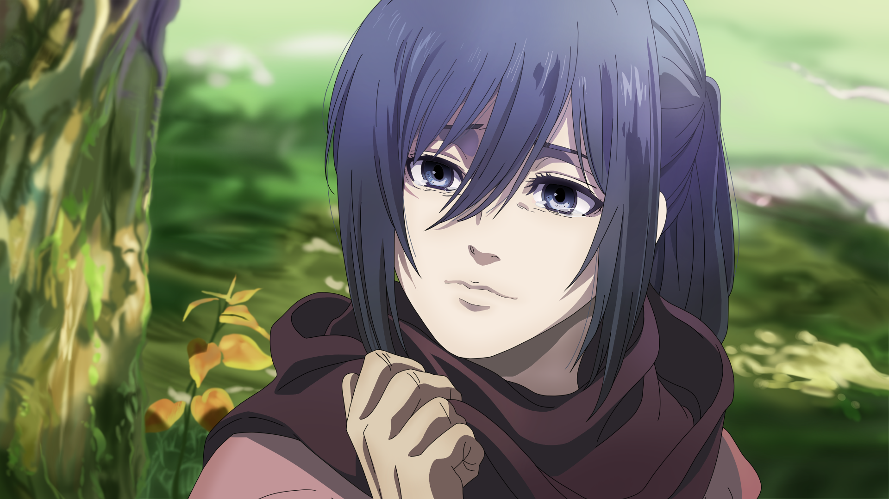

| Height: | 176 cm |
| Age: | 19 (Final Season) |
| Affiliation: | Scout Regiment (Special Operations Squad) |
Mikasa Ackerman is an elite member of the Scout Regiment. Possessing rare Ackerman blood, she has combat capabilities equivalent to a hundred ordinary soldiers. She is fiercely protective of Eren and vowed to guard him at all costs.